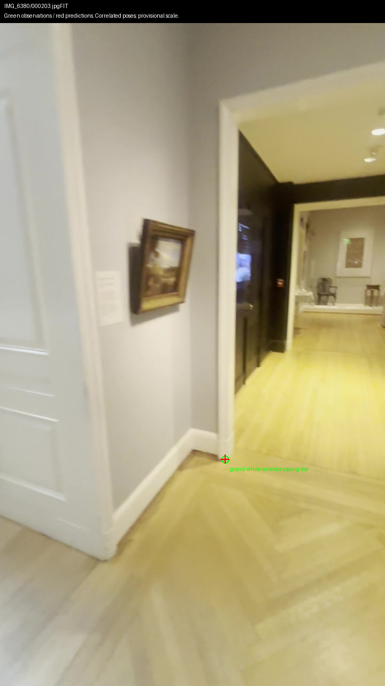
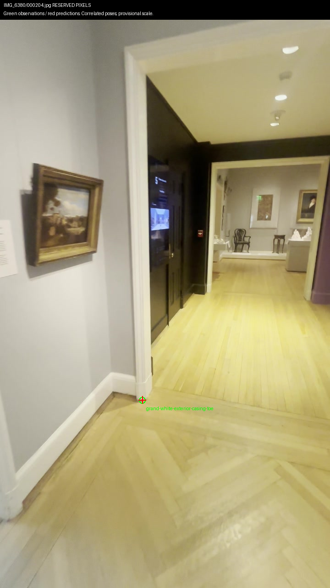
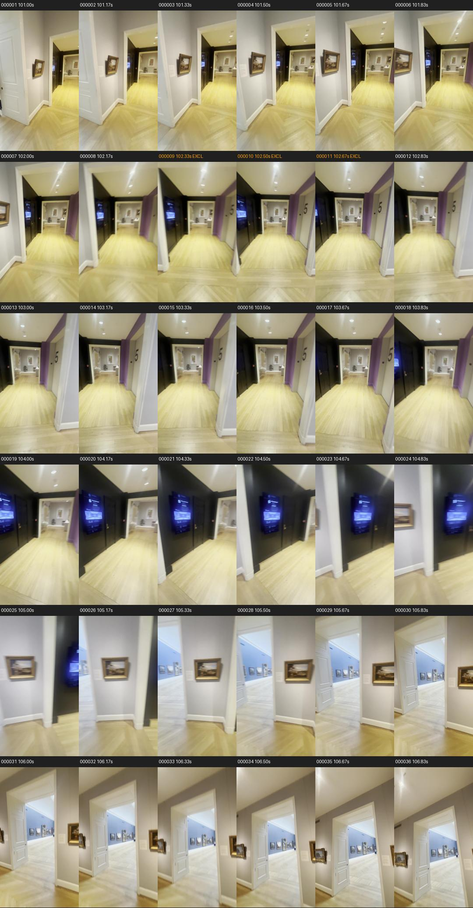
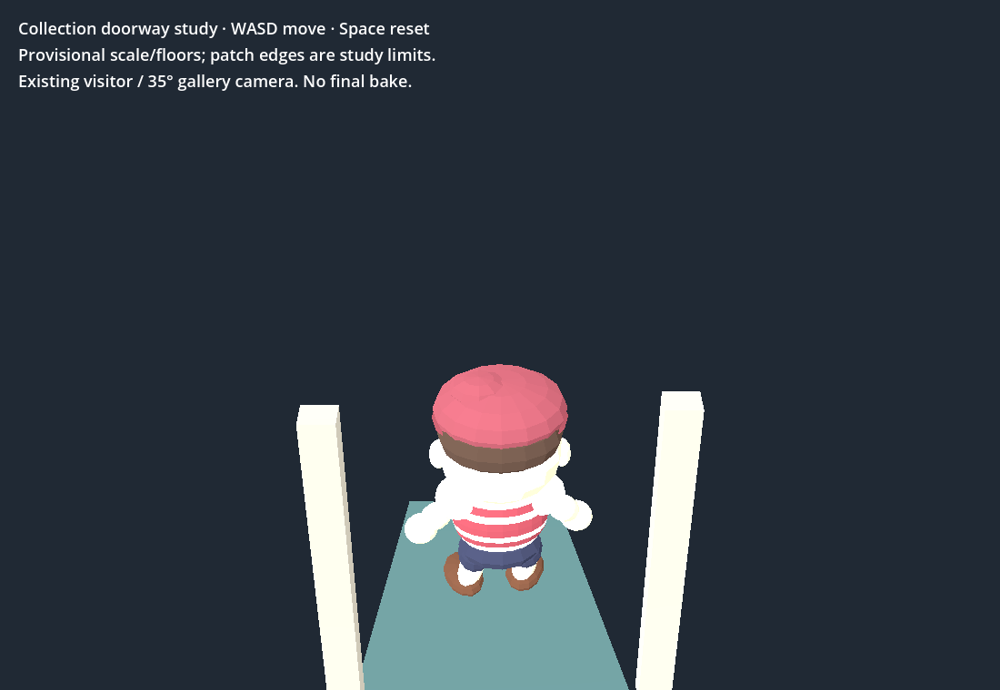

One corridor casing toe at the Grand Gallery end predicts reserved frame 204 within 0.80 pixels. Correlated video poses and provisional scale; one toe cannot define an opening or collision surface. Reverse frame 484 shows the opposite casing face and is excluded.


Measurement and uncertainty · Rejected return poses · Sources, hashes and $0 spend
Frames 210/211 have two/zero tracked points. They do not support geometry. The shared helper now rejects sparse/empty queries without a native-library TypeError; its runnable check also accepts a supported withheld frame.

36 fresh GPU-decoded frames at 6 fps around the turn; nominal times. Orange samples remain excluded near the original withheld time. Next: select sharp return frames, reserve a fresh query, and test matching against frozen references.
Play the existing bounded doorway study · WASD moves; Space resets. This is a small measured/interpolated patch, not a finished museum map.

All 24 native/Chrome checks and real WASD round trip pass on RTX 4070 SUPER. Chrome ready 2.517 s; sampled p95 16.67 ms. Native p95 8.33 ms. Tiny-scene samples, not final performance acceptance. Browser report · Native report
Repository/diff/measurement checks pass. Unchanged Shell playtest: five failures with software rendering; six on GPU, all names observed in earlier ticks. Comparison. Geometry gaps, independent scale, quality contract, sculpture mesh and bake remain open. Collection prototype only; no production integration or 3D Viewer changes.